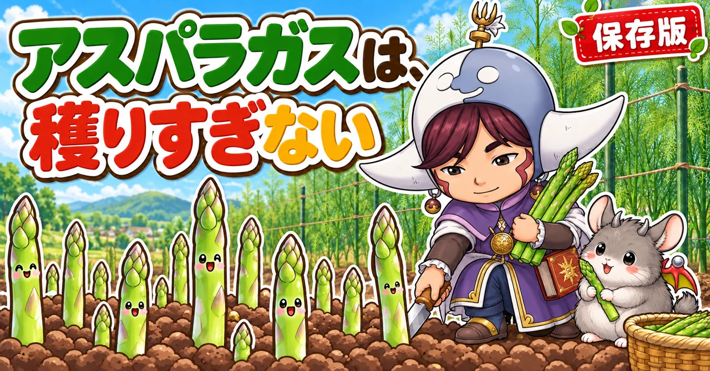

アスパラガスの育て方｜根株の選び方、植えつけ、収穫の止めどき、秋の刈り込みと冬の肥料

📖 この記事の目次
この記事で分かること
- アスパラガスは、一度植えると同じ場所で10年ほど収穫が続く多年草です。植える場所選びが、ほかの野菜よりずっと大切です。
- 苗には、大きな根株（大株）、小さなポット苗、タネがあります。植えた年から少し穫りたいなら大株、小さな苗やタネなら、本格的な収穫は2〜3年後です。
- 植えつけは、春なら2〜4月ごろ、秋なら10〜11月ごろ（一般的な地域）。
- 春に出てくる芽を全部穫ってしまうと、株が弱ります。何本か残して茎と葉を育て、根に養分をためさせるのが、翌年の収穫を増やすこつです。
- 秋は、茎と葉が自然に黄色く枯れるまで待ちます。枯れたら地ぎわ近くで刈り取り、畑の外へ片づけて、冬の肥料を入れます。
- 鉛筆より細い芽は穫らずに残します。
アスパラガスは、春にとれたてを食べると、甘みと香りの強さにおどろく野菜です。しかも一度植えれば、毎年同じ場所から芽が出てきます。家庭菜園に1株あると、春の楽しみが毎年ひとつ増えます。
その一方で、「植えたのに何年たっても細い芽しか出ない」「2年目に穫りすぎたら、翌年から出なくなった」「冬に枯れたので、ダメになったと思って抜いてしまった」という声もよく聞きます。アスパラガスは、ほかの野菜とは育ち方のしくみが少し違います。この記事では、そのしくみから、苗選び、植えつけ、収穫、秋冬の手入れまで、順番に書いていきます。
いま（秋）の時期は、春の植えつけの準備と、今ある株の刈り込み・冬の肥料の時期でもあります。季節ごとにやることを、はっきり分けて整理しておきます。
早見：アスパラガスの基本
時期の目安（一般的な地域）
- 植えつけ：春は2〜4月ごろ、秋は10〜11月ごろ。寒い地域は春の4〜5月ごろ
- 収穫：春の4〜6月ごろが中心。夏から秋にも、ぽつぽつ芽が出ます
- 茎と葉を育てる：春の収穫を止めたあと〜秋
- 刈り込み：茎と葉が黄色〜茶色に枯れたら（11月下旬〜12月ごろ）
- 冬の肥料：刈り込みのあと、12〜1月ごろ
月ごとにやること（一般的な地域）
- 1月：冬の肥料がまだなら、早めにすませる。株は休んでいる
- 2〜4月：大株の植えつけ。タネまき（2〜5月）。今ある株は、芽が出る前に株元の枯れ草を片づける
- 4〜6月：春の収穫。株の年数に合わせて止める日を決める。止めたらお礼の肥料
- 6〜8月：茎と葉を育てる。支柱とひもで支え、草取り。乾きすぎたら水
- 8〜9月：肥料。秋の芽が出はじめる
- 10〜11月：秋の植えつけ。茎と葉は枯れるまで残す。株元にわらを敷く
- 11月下旬〜12月：茶色く枯れたら刈り込み。茎と葉は畑の外へ。冬の肥料
数字の目安
- うね幅：80cmほど
- 株間：50cmほど
- 植える深さ：10cmほどの溝に根を広げ、土を3〜5cmかぶせる
- 収穫する芽の長さ：20〜25cmほど
- 残して育てる茎：1株に8〜10本ほど
- 刈り込み：地ぎわから5〜10cmほど残して切る

アスパラガスという野菜
食べているのは「若い芽」
スーパーで売っているアスパラガスは、地下の株から春に伸びてくる、若い芽です。たけのこを掘って食べるのと似ています。芽をそのまま伸ばしておくと、細い葉がふわふわと茂った、背の高い草になります。
アスパラガスは、昔はゆりの仲間とされていましたが、今は「キジカクシ」という仲間に分けられています。ヨーロッパの南のほうからロシアの南にかけてが、もともとの生まれです。暑すぎない、やや涼しい気候を好みます。
一年草ではなく、多年草
トマトやきゅうりは、タネをまいてから1年以内に一生を終える「一年草」です。アスパラガスは、地上の茎と葉が冬に枯れても、地下の株は生きていて、春になるとまた芽を出す「多年草」です。
この「地下に株が残る」ことが、アスパラガスを育てるうえで、すべての基本になります。
- 春に出る芽は、地下の株にたくわえた養分を使って伸びてくる
- 芽を穫らずに伸ばした茎と葉が、夏から秋に光合成をして、また地下の株に養分をたくわえる
- たくわえた養分が多いほど、翌年の春に太い芽がたくさん出る
つまり、アスパラガスの収穫量は、「前の年に、どれだけ茎と葉を育てられたか」で決まります。これが分かっていると、なぜ全部穫ってはいけないのか、なぜ秋に枯れるまで待つのか、が自然に分かります。
10年使う場所になる
一度植えたアスパラガスは、長いと10年ほど同じ場所で収穫できます。そのかわり、その場所は10年ほど、ほかの野菜には使えません。毎年植え替えていると、せっかく大きくなった根を切ることになり、育ちがふりだしに戻ってしまいます。
だから、植える前に、次のことを考えておきます。
- 畑のはしなど、ほかの野菜を育てるじゃまにならない場所
- 日当たりのよい場所
- 水はけのよい場所（水がたまる場所では、根がいたみやすい）
- 夏は背丈が1mを大きく超えて茂るので、まわりの野菜の日当たりをさえぎらない場所
貸し農園などで、2〜3年で区画を返す予定がある場合は、小さな苗から育てると、本格的に穫れる前に返すことになりかねません。その場合は大株を選ぶか、プランターで育てることも考えてください。
日当たりと寒さ
日当たりがよいほど茎と葉がよく育ちますが、一日じゅう日が当たる場所でなくても育ちます。少なくとも1日に3時間ほど日が当たれば育つ、という話もあります。
寒さには強く、冬に地上が枯れたあとの株は、一般的な地域の冬の寒さで傷むことはほとんどありません。冬の朝に氷点下まで冷えこむ地域でも、春になればまた芽を出します。
何株植えればいいか
株が大きく育つと、1株から春に十数本から30本ほどの芽が穫れる、と言われます。ただし、それは株が育ってからの話で、最初の年は数本です。
家族で春に何度か食べられればよい、というくらいなら、まずは2〜3株から始めると、場所もとりすぎず、手入れも続けやすいでしょう。株間を50cmほどとるので、3株なら、うねの長さは1.5mほどあれば足ります。
苗の選び方
大株、ポット苗、タネ
アスパラガスを始める方法は、大きく3つあります。
- 大株（根株）：2〜3年育てた、大きな株を掘り上げたもの。冬から春に、園芸店やホームセンターに並びます。根がたこの足のように何本も伸びた姿で売られています。値段は高めで、1株1,000円を超えることも多いです。
- ポット苗：1年目の小さな苗。春と秋に出回ります。値段は手ごろですが、本格的な収穫は2〜3年後です。
- タネ：いちばん安く始められますが、収穫できる太さになるまで3年ほどかかります。
大株は、サイズ（M、L、2Lなど）で売られていることが多く、大きいものほど値段が高く、早く太い芽が出ます。Mサイズくらいの小さめの株は、植えた年に出てくる芽が細いので、その年は穫らずに株を育てるほうが、翌年以降の収穫が増えます。
大株を選ぶときに見るところ
- 根が乾いてしわしわになっていないもの。乾ききった根は、植えてからの根づきが悪くなります。湿った状態で売られているものを選びます。
- 根の数が多く、太いもの。根にたくわえた養分が、そのまま春の芽になります。
- 株の上に、芽のふくらみ（芽の元）がいくつか見えるもの。
初めてなら、大株がおすすめ
初めて育てるなら、多少高くても大株がおすすめです。植えた年から少し穫れると、育てる楽しさが続きますし、何年も細い芽しか見られないまま、ということになりにくいからです。
土づくり
深く、ふかふかに
アスパラガスの根は、深く、広く伸びます。そして、10年ほど同じ土で育ちます。植えたあとは、株のまわりを深く耕すことができません。だから、植える前の土づくりが、ほかの野菜よりずっと大切です。
- 深さ30〜40cmほどまで、よく耕します。
- 堆肥や腐葉土を、たっぷり入れます。土をふかふかにし、水はけと水もちの両方をよくするためです。
- 酸性の土を嫌うので、石灰（貝殻の石灰など）を入れて、土の酸っぱさを整えます。
- 元肥として、鶏ふんや、ぼかし肥、米ぬかなど、ゆっくり効く肥料を入れます。
肥料は、根にじかに触れないように
植え穴に肥料を入れる場合は、穴の底に肥料を入れて、その上に10〜20cmほど土をかぶせ、根がじかに肥料に触れないようにします。肥料が分解するときの熱やガスで、根がいたむのを防ぐためです。
本当は、植える1か月ほど前に土づくりをすませておくのが理想です。直前になる場合は、肥料を深めに入れ、根に触れないよう土を厚めにかぶせてください。
水はけが悪い畑では
水がたまりやすい畑では、うねを高めにして植えます。アスパラガスは乾燥にはある程度強いのですが、根が水につかりっぱなしになる状態には弱いからです。
植えつけ
植える時期
- 春：2〜4月ごろ（一般的な地域）。寒い地域は4〜5月ごろ。
- 秋：10〜11月ごろ。
- ポット苗は、暖かくなった5月ごろでも植えられます。
大株は冬から春に出回ることが多いので、春植えが一般的です。秋に植える場合は、寒さが本格的になる前に根を張らせるよう、早めに植えます。
植える前に、根を水につける
買ってきた大株の根が乾いているときは、植える前にバケツの水に根をつけて、しばらく水を吸わせます。半日ほどつけておく人もいます。
根を、円を描くように広げる
1．うね幅80cmほどのうねに、深さ10cmほどの溝か植え穴を掘ります。
2．植え穴に水をたっぷり注ぎ、しみこませます。
3．株を置き、根を四方へ、なるべく均等に広げます。真上から見たときに、根が円を描くように広がるのが理想です。
4．根が重ならないように整えたら、土を3〜5cmほどかぶせます。深く埋めすぎる必要はありません。
5．上から、もう一度水をやります。
6．株と株の間は、50cmほどあけます。
根を広く広げるのは、新しい芽が出てくる場所を広くするためです。根を束ねたまま植えると、芽が狭いところに集まって、育ちにくくなります。
植えたあと
植えたあと、寒い時期は、わらや落ち葉、刈った草などを株の上に敷いておくと、寒さと乾燥から守れます。透明なビニールでうねを覆う人もいます。3月の初めごろまでの、寒さよけと考えてください。
根づいたあとは、基本的に雨にまかせます。ただし、春から夏にかけて雨が降らず、土がからからに乾く日が続くときは、たっぷり水をやります。

収穫
穫りどき
春、地面から芽が顔を出すと、暖かい日には1日で見違えるほど伸びます。芽が20〜25cmほどになったら、収穫します。
- 地ぎわに近いところで、はさみやナイフで切ります。
- または、芽を手で曲げて、ぽきっと自然に折れるところで折ります。折れるところから上が、やわらかく食べられる部分です。
穫り遅れると、先の部分（穂先）が開いてきて、かたくなります。収穫が始まったら、暖かい時期はできれば毎日見回ってください。
細い芽は穫らない
鉛筆と同じくらいか、それより細い芽は、穫らずに残します。細い芽を残して茎と葉に育てると、その年の光合成で株に養分がたまり、翌年以降に太い芽が出るようになります。
何年も育てている株でも、細い芽が出てきたら、それは残しておきます。
何本で止めるか（いちばん大事なところ）
春に出てくる芽を、全部穫り続けてはいけません。全部穫ると、茎と葉が育たず、株に養分がたまらないので、翌年の芽が細く、少なくなります。ひどいと、株そのものが弱って、出なくなってしまいます。
収穫をいつまで続けるかは、株の年数で変わります。よく言われる目安は、次のとおりです。
- 収穫を始めた最初の年：芽が出始めてから2週間ほど穫ったら止める
- 2年目：1か月ほど穫ったら止める
- 3年目以降：株が大きくなっていれば、2か月ほど穫ってもよい
止めたあとに出てくる芽は、すべて穫らずに伸ばし、茎と葉に育てます。1株に8〜10本ほどの茎が立つのが目安です。
小さなポット苗やタネから育てた株は、植えた年と、その次の年は穫らずに株を育て、3年目から収穫を始めるくらいのつもりでいると安心です。
夏から秋の芽
夏から秋にも、ぽつぽつと芽が出てきます。株が十分大きければ、太いものを少し穫ってもかまいません。ただ、まだ若い株は、秋の芽も穫らずに育てたほうが、翌年の収穫が増えます。
白いアスパラガスも作れる
白いアスパラガス（ホワイトアスパラガス）は、別の品種だと思われがちですが、同じアスパラガスです。芽に日光を当てずに育てると、緑にならず、白くなります。
芽が地面から出る前に、土を高く盛るか、光を通さない筒や袋をかぶせておき、その中で伸ばしてから穫ります。芽が少しでも光に当たると、先が色づいてきます。
夏の手入れ
茎を倒さない
収穫を止めて伸ばした茎は、1mを大きく超えて、細い葉がふさふさに茂ります。茎は細く、風で折れたり、倒れたりしやすいものです。
株のまわりに支柱を立て、ひもで囲って、茎が倒れないように支えます。背丈と同じくらいの支柱（150cmほど）を数本立て、ひもでぐるりと囲えば十分です。茎をぎゅっと束ねるのではなく、なるべく広げて、葉の1枚1枚に日が当たるようにします。
茎が倒れると、葉が重なって日が当たらなくなり、光合成が減ります。折れた茎は、そこから先の葉がはたらけなくなります。
秋から冬にかけては、茎が弱ってきて、強い風でさらに折れやすくなります。支柱のまわりを防虫ネットで囲っておくと、風よけと寒さよけを兼ねられます。茎と葉が枯れるぎりぎりまで元気でいられるよう、秋の風対策もしておきます。
肥料
アスパラガスは、肥料をよく使う野菜です。肥料の目安は、次の時期です。
- 春の収穫を止めたころ（お礼の肥料）
- 夏の終わりから初秋（8〜9月ごろ）
- 冬の刈り込みのあと（12〜1月ごろ）
株のまわりに円を描くようにまき、表面の土と軽く混ぜます。芽が出てくる時期に株元を深く掘ると、芽を傷つけるので、株から20cm以上離れたところに、浅く入れます。量は、使う肥料の袋に書かれた目安を参考にしてください。
草と水
春から夏は、株のまわりに草が生えやすくなります。草は小さいうちに抜きます。株元にわらや刈った草を敷いておくと、草も生えにくく、乾燥も防げます。
夏に雨が降らず、土が乾ききる日が続くときは、朝か夕方にたっぷり水をやります。ただし、水はけの悪い場所に水をやりすぎると根がいたむので、水たまりができるほどはやりません。
秋の手入れ：枯れるまで待つ
黄色くなっても、まだ働いている
秋が深まると、茎と葉がだんだん黄色くなってきます。「もう終わりかな」と思って、早めに刈ってしまう人がいますが、それはもったいないことです。
黄色っぽくなっても、葉に緑が残っているうちは、まだ光合成をして、地下の株に養分を送っています。秋に葉がはたらく期間が長いほど、翌年の芽が太く、多くなります。だから、茎と葉は、自然に枯れるぎりぎりまで、元気に育てておきます。
- 株元にわらや刈った草を敷いて、根元を冷えから守る
- 支柱とひもで、強い風から茎を守る
- この時期に、無理に収穫しない
植えて1〜2年の株は先に枯れる
植えて1〜2年の若い株は、11月中旬ごろから茶色く枯れてくることが多く、何年も育てた大きな株は、12月に入っても青々としていることがあります。株の年数や地域で、枯れる時期はずいぶん違います。日付で決めず、株の色を見て決めてください。
冬の手入れ：刈り込みと冬の肥料
刈り込みの時期と高さ
茎と葉が、すっかり茶色く枯れたら、刈り込みます。一般的な地域では、11月下旬〜12月ごろです。
- 地ぎわから5〜10cmほど残して、茎を切ります。
- 軽く引いて、すっと抜けてくる茎は、取り除いておきます。
刈った茎と葉は、畑の外へ
刈り取った茎と葉は、うねの上や畑のすみに置いておかず、必ず畑の外に持ち出して片づけます。
アスパラガスには「茎枯病（くきがれびょう）」という病気があります。茎に病気の斑点ができ、ひどくなると茎が枯れてしまう病気で、病気の元は、枯れた茎の上で冬を越し、次の年の雨のしずくで広がると言われています。刈った茎を畑に残すと、それが翌年の病気の出発点になってしまいます。
刈り取った切り株を、バーナーで焼いて消毒する人もいます。まわりに燃えうつるものがない場所でだけ行ってください。
冬の肥料
刈り込みがすんだら、冬の肥料（寒肥）を入れます。
1．株から20cm以上離れたところに、円を描くように、浅い溝を掘るか、土の表面をほぐします。
2．鶏ふんや、ぼかし肥などをまき、堆肥や腐葉土もいっしょに入れます。
3．土と軽く混ぜます。深く掘りすぎて、根を傷つけないようにします。
4．肥料がなじむ程度に、軽く水をやります。やりすぎると根がいたむので、少しでかまいません。
冬に入れた肥料は、春に芽が伸びはじめるころに、ちょうど効いてきます。年内か、遅くとも1月ごろまでにすませておきます。
冬は、枯れていて正しい
冬のアスパラガスは、地上に何も見えなくなります。「枯れてしまった」と勘ちがいして、株を掘り上げたり、上に別の野菜を植えたりしないよう、支柱を1本立てるなどして、場所の目印をつけておきます。
地下では、株が休みながら春を待っています。春、気温が上がると、また芽が顔を出します。
植え替えや株分けは冬に
アスパラガスを別の場所に移したいとき、混みあった株を分けたいときは、茎と葉が枯れて休んでいる冬が向いています。株を掘り上げ、根をなるべく切らないようにして、新しい場所に植えつけと同じ要領で植えます。

病気と虫
茎枯病
アスパラガスで特に気をつけたい病気です。茎に、茶色っぽい、細長い斑点が出て、ひどくなると茎が枯れます。雨が多い時期（梅雨や秋の長雨）に広がりやすいと言われています。
- 病気の茎を見つけたら、早めに切り取って畑の外へ
- 冬の刈り込みで、茎と葉を畑に残さない
- 茎が混みすぎないようにして、風通しをよくする
- 株元にわらや刈った草を敷き、雨で土がはね返るのを減らす
虫
春の芽や、夏の茎と葉を食べる虫がつくことがあります。見つけたら手で取ります。夏に葉がふさふさに茂っている時期は、ときどき茎をゆすって、葉の間を見ておきます。
赤い実がなったら
アスパラガスには、雄の株と雌の株があります。雌の株は、夏から秋に小さな丸い実をつけ、秋には赤く色づきます。
実が落ちると、そこからタネが芽を出して、株のまわりに小さなアスパラガスが生えてきます。そのままにすると株が混みあうので、小さいうちに抜きます。
プランターで育てる
なるべく大きなプランター
アスパラガスは根を深く広く張るので、プランターで育てる場合は、なるべく大きく、深いものを使います。土が40リットル以上入るような、大型のプランターが目安です。野菜用の培養土を使えば、土づくりの手間は省けます。
植え方は、畑と同じです。根を広げて置き、土を3〜5cmほどかぶせます。
いちばんの失敗は、水切れ
プランターは、畑よりずっと乾きやすく、数日水やりを忘れただけで、株が枯れてしまうことがあります。特に、茎と葉が茂る春から夏は、土の表面が乾いたらたっぷり水をやります。
冬は茎と葉が枯れて水をあまり使わなくなりますが、土がからからに乾ききらないよう、ときどき様子を見て水をやります。
肥料も切らさない
プランターの土は量が限られているので、肥料も切れやすくなります。春の収穫を止めたころ、夏の終わり、冬の刈り込みのあと、と、畑と同じ時期に肥料を足します。
タネから育てる
時間はかかるが、安く始められる
タネから育てると、いちばん安く始められますが、太い芽が穫れるまで3年ほどかかります。
- タネは、とてもかたい皮に包まれていて、水を吸いにくいので、まく前にしばらく水につけておく人もいます。
- タネまきは、暖かくなってきた春（2〜5月ごろ）。
- 最初の年は、ひょろひょろの細い株にしかなりません。畑に直接まくと、場所を長く占領するので、ポットや苗床で苗を育て、大きくしてから植えるほうが管理しやすいでしょう。
タネからの育て方の流れ
1．タネを一晩ほど水につけて、水を吸わせます。
2．小さな育苗ポットより、ひとまわり大きな鉢を使うと、1年近く育てる間の水やりや肥料の管理が楽になります。大きめの鉢に、5〜6粒ほどまきます。
3．土をかぶせて、たっぷり水をやります。寒いうちは、日当たりのよい暖かいところに置きます。
4．3〜4月になって暖かくなったら、外に出して育てます。
5．小さなポットで育てた苗は、5〜6月ごろに畑へ。大きな鉢でもう少し育てる場合は、10〜11月ごろに畑へ植えます。
畑は、植える1か月以上前に、堆肥と肥料を入れて準備しておきます。植えた年と翌年は、芽を穫らずに茎と葉を育てることに専念し、3年目から少しずつ収穫を始めます。
芽が少ない・細いときの見直し
まず、株の年数を確かめる
小さな苗やタネから育てて1〜2年目なら、芽が細いのは当たり前です。この時期は穫らずに株を育てる時期なので、心配はいりません。大株を植えた場合でも、Mサイズくらいの小さめの株なら、1年目の芽は細めです。
前の年の茎と葉は育っていたか
春の芽の太さは、前の年の茎と葉の育ち方で決まります。次のようなことがなかったか、ふり返ってみます。
- 春に穫りすぎて、残した茎が少なかった
- 夏に茎が倒れたり折れたりして、葉が重なっていた
- 秋、まだ緑が残っているうちに刈ってしまった
- 夏に雨が降らず、土が乾ききっていた
- 病気で茎が早く枯れた
土と肥料はどうか
アスパラガスは、肥料をよく使う野菜です。冬の肥料や、収穫後の肥料を何年も入れていないと、株がやせて芽が細くなります。株のまわりの土がかたくしまっている場合も、根が伸びにくくなります。冬の肥料のときに、堆肥や腐葉土を株のまわりに入れ、土をやわらかく保つようにします。
立て直しは「1年休ませる」
芽が細く、少なくなってきた株は、1年、収穫を控えて、出てきた芽をすべて茎と葉に育てると、持ち直すことがあります。肥料を入れ、夏は支柱で茎を支え、秋は枯れるまで待つ。この基本を1年きちんと続けると、翌年の芽が変わってきます。
何年も育てて株が古くなり、混みあってきた場合は、冬に掘り上げて株分けし、植え直すことも考えます。
説明が分かれるところ
植えた年に穫るか、穫らないか
大株を植えた場合、「植えた年から少し穫ってよい」という考え方と、「1年目は我慢して株を育てたほうが、2年目以降にたくさん穫れる」という考え方があります。
畑を長く使えるなら、1年目は我慢、または、ごく短い期間だけ穫って止めるのが無難です。貸し農園などで期間が限られているなら、大株を植えて、1年目から少しずつ穫る、という選び方もあります。
雄株と雌株、どちらがよく穫れるか
「雄株のほうが、実をつけるのに養分を使わないぶん、収量が多い」と言われることがよくあります。一方で、産地の試験で、雌株のほうが収量が多かったという結果が出たこともあり、説明は分かれています。
雄株と雌株は、花が咲くまで見分けにくいので、家庭菜園では、どちらかを選んで植えるのはむずかしいものです。雌株なら、赤い実から生えてくる小さな芽をこまめに抜く、と覚えておけば十分です。
切り株を焼くか
刈り込みのあと、切り株をバーナーで焼くと、病気の元を減らせるという考え方があります。ただ、家庭菜園では火の扱いに気をつける必要があり、まわりの状況によってはできません。焼かない場合でも、刈った茎と葉を畑の外に出すことだけは、必ず行ってください。
秋の芽を穫るか
株が大きければ秋の芽も少し穫ってよい、という考え方と、秋の芽は穫らずに株を大きくしたほうが翌年の収穫が増える、という考え方があります。株が若いうちは穫らずに育て、何年も育てた大きな株なら太いものを少し、というのが中間の答えです。
よくある失敗
春に全部穫ってしまった
おいしいので、つい穫り続けてしまいがちですが、全部穫ると翌年が細くなります。株の年数に合わせて、収穫を止める日を決めておきます。
細い芽まで穫ってしまった
細い芽は、翌年の太い芽を育てるための、大切な茎と葉になります。鉛筆より細い芽は残します。
黄色くなった時点で刈ってしまった
葉に緑が残っているうちは、まだ養分をためています。すっかり茶色になるまで待ちます。
刈った茎を畑に置きっぱなしにした
翌年の茎枯病の元になります。必ず畑の外へ出します。
冬に枯れたと思って抜いてしまった
冬は地上が枯れていて正常です。場所に目印をつけておきます。
植えて数年、手入れをしなかった
追肥や、株元に敷くわら・落ち葉の手入れが何年も抜けると、株が弱り、芽が細くなっていきます。毎年の肥料と、冬の片づけは欠かさないようにします。
よくある質問
何年くらい穫れますか
長いと10年ほど穫れると言われます。おいしい芽がたくさん出るのは、植えてから数年たって株が大きくなったころです。年数がたって芽が細くなってきたら、株分けや植え替えを考えます。
芽が細いまま太くなりません
茎と葉を十分に育てられていない、肥料が足りない、日当たりが悪い、収穫しすぎ、などが考えられます。1年、収穫を控えて茎と葉をしっかり育て、肥料を入れると、翌年持ち直すことがあります。
芽の先が開いてしまいました
穫り遅れです。暖かい時期は芽の伸びがとても速いので、毎日見回るようにします。開いたものも、かたい部分を除けば食べられます。
ほかの野菜と同じうねで育ててもいいですか
アスパラガスは10年ほど同じ場所にいて、夏は背丈が高く茂るので、ほかの野菜とは別の場所にまとめたほうが管理しやすくなります。
秋に植えた株は、次の春に穫れますか
大株を秋に植えた場合は、冬の間に根を張らせて、春に芽を出します。大きな株なら、春に少し穫れることもあります。ただ、植えてから最初の春なので、穫るのはごく短い期間にとどめ、あとは茎と葉を育てて、株を大きくすることを優先します。小さな株を秋に植えた場合は、次の春は穫らずに育てます。
紫色のアスパラガスもありますか
あります。紫色の芽を出す品種も、苗やタネで売られています。育て方は緑のアスパラガスと同じです。ゆでると、紫色が抜けて緑っぽくなることがあります。
学ぶ：アスパラガスのしくみ🔬
芽の太さは、去年の光合成で決まる
アスパラガスの地下には、太い根がたくさん伸びていて、ここに養分（おもに糖分）がたくわえられています。春の芽は、この養分を使って一気に伸びてきます。だから、春の芽の太さや数は、春の天気よりも、前の年の夏から秋に、茎と葉がどれだけ光合成をして、根に養分を送れたかで決まります。
春に芽を穫ると、そのぶん、たくわえた養分を使います。穫り続けると、たくわえが減る一方になります。収穫を止めて茎と葉を育てるのは、使った養分を「貯金し直す」ためなのです。
芽は、地下の茎から出てくる
株を掘り上げてみると、太い根がたこの足のように何本も伸び、そのつけ根に、横にはうような地下の茎があります。春の芽は、この地下の茎のあちこちから顔を出します。みょうがやたけのこと同じ出方です。
植えつけのときに根を円を描くように広げるのは、この地下の茎が広がる場所を作るためでもあります。年を重ねるほど地下の茎が広がり、芽の出る場所が増えていきます。何年もたつと、地下の茎が混みあってきて、芽が細くなることがあります。株分けをすると、また広がる場所ができます。
なぜ、暖かい日にぐんぐん伸びるのか
芽の伸びる速さは、気温に大きく左右されます。春先のまだ寒い時期は、芽が出てもなかなか伸びませんが、気温が上がってくると、芽は驚くほどの速さで伸びます。25℃前後の暖かい日には、朝は小さかった芽が、夕方には穫りどきになっていることもあります。
暖かくなってからの収穫が「毎日見回る」になるのは、このためです。逆に、寒の戻りで冷えこむと、伸びがぴたりと止まります。芽が出ているのに伸びないときは、気温が上がるのを待ってください。
なぜ、白いアスパラガスができるのか
植物の緑色は、葉緑素という色素の色です。葉緑素は、光に当たらないとほとんど作られません。土の中を伸びるもやしや、白ねぎの白い部分と同じで、光を当てずに育てたアスパラガスは、緑にならず白いままです。品種の違いではなく、光の当たり方の違いなのです。
なぜ、刈った茎を片づけるのか
病気の元になる菌の多くは、病気になった植物の残りの上で冬を越します。冬を越した菌は、春から夏の雨のしずくに乗って、新しい茎に広がります。刈った茎と葉を畑の外に出すのは、病気の元が冬を越す場所をなくすことになります。薬を使わずにできる、いちばん効く病気の予防です。
まとめ
ここまで読んでくださって、ありがとうございます！
アスパラガスの育て方のポイントを、もう一度まとめておきます。
- 一度植えると10年ほど同じ場所。日当たりと水はけがよく、じゃまにならない場所を選ぶ
- 初めてなら大株。小さなポット苗やタネは、本格的な収穫まで2〜3年
- 植える前に深く耕し、堆肥と石灰、ゆっくり効く肥料を。肥料は根にじかに触れないように
- 根を円を描くように広げて植え、土は3〜5cm
- 芽は20〜25cmで収穫。鉛筆より細い芽は残す
- 収穫は株の年数で止める（最初の年は2週間、2年目は1か月、3年目以降は2か月ほど）
- 止めたら1株8〜10本の茎を育て、支柱とひもで倒れないように支える
- 秋は枯れるぎりぎりまで待つ。茶色く枯れたら5〜10cm残して刈り、茎と葉は畑の外へ
- 刈り込みのあとに冬の肥料。冬は地上が枯れていて正常
- プランターは大きなものを使い、水切れに注意
アスパラガスは、すぐに結果が出る野菜ではありませんが、一度うまく株が育てば、毎年春に、とれたての芽を楽しませてくれます。今ある株は、茎と葉が枯れるまでもう少し見守ってあげてください。これから始める方は、冬から春に園芸店に並ぶ大株を、ぜひ探してみてください🌱
支柱
収穫を止めて伸ばした茎は、風で倒れやすくなります。株のまわりに立ててひもで囲います。
![[商品価格に関しましては、リンクが作成された時点と現時点で情報が変更されている場合がございます。]](https://hbb.afl.rakuten.co.jp/hgb/56d221a0.da732c49.56d221a1.b57a6709/?me_id=1230952&item_id=10017113&pc=https%3A%2F%2Fthumbnail.image.rakuten.co.jp%2F%400_mall%2Fnou-nou%2Fcabinet%2F5010356000109-01.jpg%3F_ex%3D240x240&s=240x240&t=picttext "[商品価格に関しましては、リンクが作成された時点と現時点で情報が変更されている場合がございます。]")

腐葉土
植える前の土づくりと、冬の肥料のときに。10年使う土をふかふかに保ちます。

大型プランター
畑がなくても、土がたっぷり入る大きなプランターなら育てられます。水切れに注意します。

あわせて読みたい


次に読む
記事一覧へ